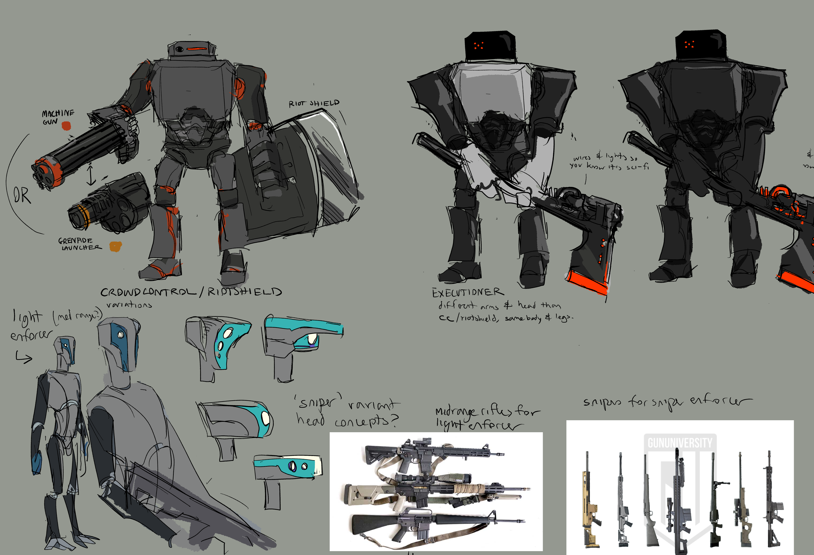
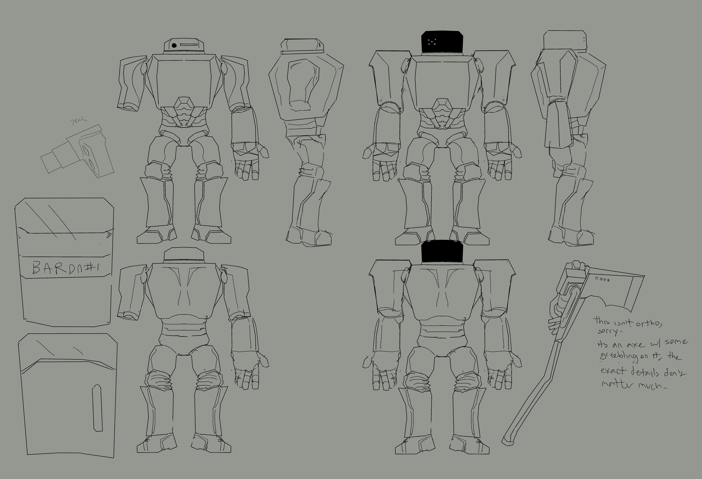

SPEKTRE
I was working as a concept artist/character designer for the game. My role was to iterate on environment and enemy designs to best fit the team's vision for the game world.
CHIRA

The CHIRA virus, a deadly disease that infected animal and machine alike.
The main aesthetic inspiration behind the virus was wires, slime molds, and machinery. I tried to integrate these motifs into the design while still making it easy enough to work with and integrate into enemy designs.
Environments

Images of insect hive environments.
These were created for the first level of the game, an underground tramway where insectoid enemies lurked in their ever-expanding hive. I tried a few different aesthetics of 'hive' here, taking inspiration from real-life bug nests as well as more sci-fi technology shapes.
Enemies




Intial enemy sketches, cleanup and turnaround, colored sketches, and more turnarounds.
The process of designing an enemy relied on communication between the concept artist (me), the 3D team, and the team lead all working together to make sure everything was feasible, interesting, and fun to play against. These images demonstrate the process of sketching and iteration, eventually culminating into turnarounds that would go to the 3D team to model and rig.